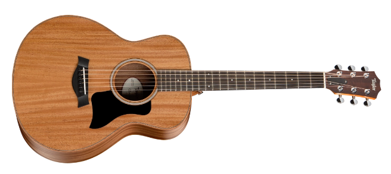

Acoustic Guitars
We have a wide selection of low and high end acoustic guitars to meet everyone's needs.
Details
- Body Shape: GS mini
- Scale Length: 23-1/2"
- Top Finish: Matte
- Body Finish: Matte
- Body Length: 17 5/8"
- Body Width: 14 3/8"
- Body Depth: 4 7/16"
- Frets: 20
- Fretboard Wood: West African Crelicam Ebony
- Included Case: Structured Gig Bag
- Price: $699 CAD
Details
- Scale Length: 25-1/2"
- Top Finish: Varnish
- Body Length: 20"
- Body Width: 16"
- Body Depth: 4 5/8"
- Frets: 20
- Price: $999 CAD